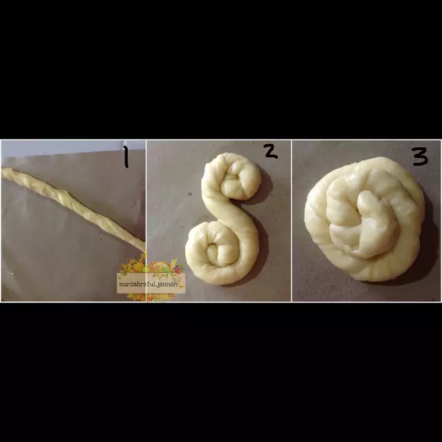
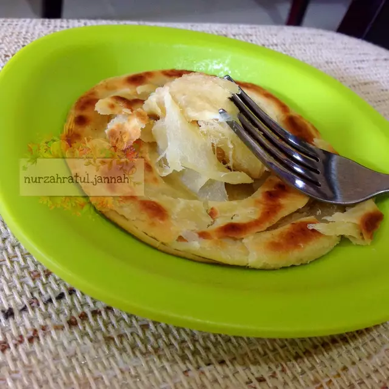

ROTI MARYAM
Bahan-bahan :

- 500 gr tepung terigu prot sedang / prot tinggi
- 1 butir telur utuh dan 1 kuning telur
- 2 sdm susu bubuk / susu kental manis
- 1/2 sdt garam
- 84 ml minyak goreng
- 225 ml air hangat
- Margarin secukupnya (hanya untuk olesan)
Pelengkap topping:
- Keju, susu kental manis, meses/coklat leleh
- Semangkuk kecil gulai / kuahnya saja
Langkah-langkah :
- Siapkan wadah, campur air, minyak goreng dan telur, aduk hingga rata menggunakan wisk atau garpu
- Masukkan tepung terigu, susu, dan garam, uleni sampai kalis
- Bagi adonan sama rata, bentuk bulat-bulat, olesi margarin diseluruh bagian sampai rata (boleh pakai margari cair/minyak goreng).
Setelah itu tutup dengan plastik dan lap basah, diamkan selama 1 jam
- Ambil satu adonan, pipihkan hingga tipis olesi dengan margarin secara merata
- Lalu gulung perlahan sampai bentuk memanjang dan sedikit ditarik agar lebih panjang[1]. Kemudian gulung melingkar dengan arah berlawanan jadi seperti huruf 'S'[2].
ketika sudah bertemu ditengah, lalu tumpuk Jadi satu[3]

- Panaskan teflon, ambil adonan yang sudah di tumpuk jadi satu[3] kedalam teflon, langsung pipihkan dengan cara ditekan memutar menggunakan serokan penggorengan
- Jika bagian bawah sudah sedikit mengeras, balik lalu tekan memutar lagi, balik tekan kembali hingga semua sisi berwarna kuning kecoklatan,
- Jika semua sisi sudah berwarna kuning kecoklatan, angkat dan lakukan kembali pada adonan berikutnya hingga habis

- Apabila sudah matang semua, sajikan dengan topping sesuai selera..roti ini enak juga dimakan bersama semangkuk gulai untuk pengganti nasi🍵🍴
- Kalau membuat banyak, dan tidak langsung habis, bisa disimpan di dalam frezeer, dapat bertahan kurleb 1mingguan+.
Jika mau disajikan kembali tinggal di panasin pakai teflon dan tidak perlu pakai minyak.